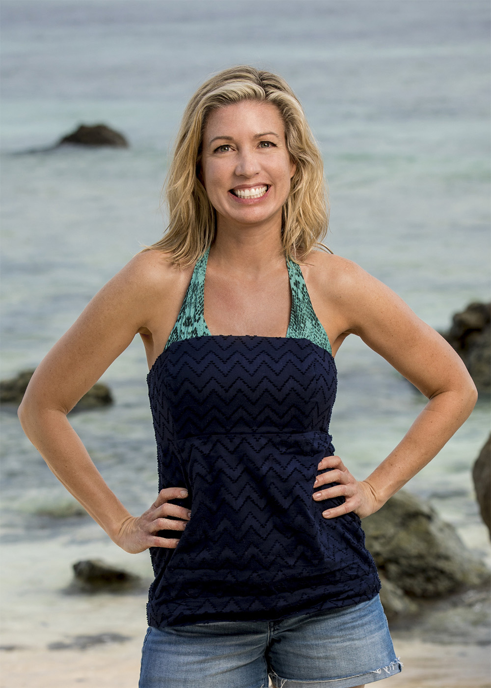
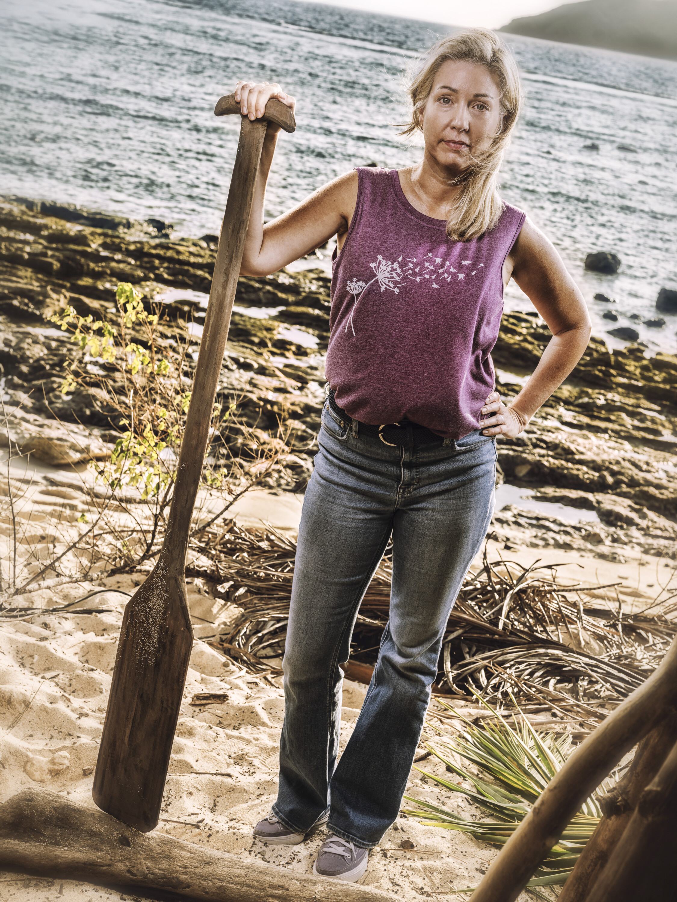

Chrissy Hofbeck
Kalo Tribe
Age
54
Hometown
New Jersey
Residence
The Villages, FL
Occupation
Actuary
Previous Season
35 (Runner-up)
Status
Active

Season 35 (HvHvH)

Season 50
About
Chrissy Hofbeck was the runner-up on Heroes vs. Healers vs. Hustlers (Season 35), where she tied the all-time women's record with four individual immunity challenge wins. She was part of 52% of all challenge wins that season. Since her Survivor appearance, Chrissy faced a major health scare — diagnosed with a mutated BRCA gene, she underwent pre-emptive surgery and later discovered she had developed a tumor, validating her decision. That experience strengthened her trust in her own intuition.